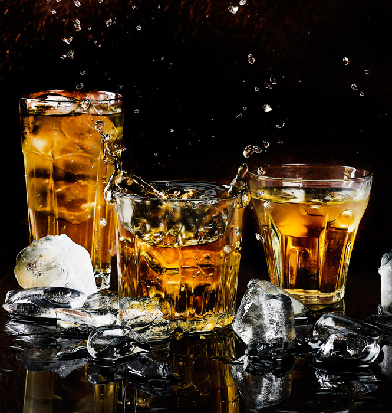

【飲みやすい！】初心者におすすめの2000円代ウイスキー 5選

公開日 2023/08/08
※お酒は二十歳になってから。運転時、妊娠期などの飲酒も控えましょう。
お酒を趣味にしたいなぁと思っている人もいるのではないでしょうか。
みなさんがお酒を飲む時はどんな時でしょうか？
仕事終わりの一杯や休日の夜に一人で飲む一杯。家族や友人などの記念日や誕生日、または女性と最高のひとときに格好付けたいなどなど色々あると思います！
なので今回はこれから趣味をお酒にしたい人におすすめのウイスキーを紹介したいと思います！
最後まで見ていてくださると幸いです！
もくじ
第1位 デュワーズ 12年 ブレンデッド スコッチウイスキー 40度 2145円(税込)

こちらの商品はとても有名ですね！
アルコール度数は40度です！
初めて飲むウイスキーにしては強すぎない！？と思う方もいるかと思いますが問題ありません！
ストレートで飲んでもアルコール独特の匂いなどはあまり感じませんでした！さらにハイボールで飲んでもスーゥっとアルコールが消え、飲みごたえ最高です！
またはコーラで割ったコークハイなどもおすすめです！
初めてデュワーズ 12年を飲むならハイボールから飲んで欲しいというのが私の感想です！ぜひ飲んでください！
楽天市場で見る >
第2位 バランタイン 12年 2475円(税込)

こちらもかなりおすすめです！
バランタイン 12年は厳選されたモルト原酒、グレーン原酒を40種類以上使用したブレンドウイスキーとなっています！
飲んだ感想としてははちみつやバニラの匂いをとても感じます。そして何よりもフルーティーなんです！アルコールの苦さを感じることなく飲むことができるので飲み過ぎ注意かもしれません。(笑)
楽天市場で見る >
第3位 サントリー 山崎 43度 180ml(ベビーサイズ) 2580円(税込)

なんと山崎がこんな価格で飲むことができちゃいます！山崎といえば入荷されたら即完売になってしまうほどウイスキー好きの皆様には大人気のサントリーの山崎がミニボトルですが2000円台で飲むことができちゃいます！
まずはストレートで飲んでみましょう！その後にハイボールで飲んでみるのもアリかもしれません。
しかし山崎はハイボールとして飲むことももちろん良いのですが贅沢かもしれません...。
なので仕事で大きなプロジェクトが成功した時やカップルの記念日などのおめでたい時に大切な人と一緒に飲んだりすると楽しみが増えたりしますよ！
楽天市場で見る >
第4位 バスカー アイリッシュウイスキー 1980円(税込)

こちらのウイスキーは2020年に誕生したばかりなんです！ですが、2021年の「Wine Enthusiast」のザ・ベスト・バイ・アマング・アイリッシュブレンド賞、SFWSC 2021で金賞、L.A. spirits awards 2020で金賞を受賞するなど誕生したばかりなのにも関わらず色々な権威ある賞で受賞経験のあるウイスキーです！
味の特徴はアイリッシュウイスキーの特徴であるトロピカルフルーツフレーバーを味わうことができます。とてもなめらかな味わいなので初心者の方でもストレートでも飲めるのが魅力的です！
バスカーにはアイリッシュウイスキーの他にも3つの種類がありますので、飲み比べしたくなったら買って飲んでみるようにしましょう！
楽天市場で見る >
第5位 サントリー 角瓶 1650円(税込)

サントリーの角瓶はコンビニなどでハイボール缶が売られていたり、居酒屋のメニュー、CMなどで流れているので知っている方が多いかもしれません！
こちらは日本で1937年に誕生したウイスキーです！それから約70年。ビンの形を変えながら不動の地位を確立してきました。
居酒屋などでは「角ハイボール」という商品で売られているくらい知名度があります。そのため家で飲む時もハイボールで飲むことをおすすめします！
またお値段もお手頃なので仕事終わりの一杯などでお手軽に飲むことができますのでぜひ食事のお供にどうぞ。
楽天市場で見る >
まとめ

どうでしたか？今回は初心者におすすめのウイスキー5選を紹介しました！初めて飲む方にも手が出しやすいお値段のウイスキーを紹介しました。これからたくさんのウイスキーを買って飲んでも、飲みたくなるようなウイスキーたちですのでぜひ手に取って飲み比べをしてみてください！
最後まで見てくださりありがとうございました。